1.1 Leçon
1.1.1 Les données spatiales d’hier à aujourd’hui
Les cartes anciennes
La représentation géographique est une description de l’emplacement des éléments naturels (cours d’eaux, montagnes, forêts, etc.) et artificiels (routes, ponts, bâtiments, etc.) au sein d’un territoire. Cette représentation peut être détaillée ou abstraite, et décrire un espace restreint tout comme un vaste territoire.
La cartographie est utilisée depuis l’Antiquité pour répondre à de multiples besoins comme celui d’illustrer la distribution spatiale des ressources, de définir les frontières et l’appartenance des territoires ou encore de guider les déplacements.
La carte de la cité babylonienne de Nippur, datant d’environ 1500 av. J.-C., constitue probablement la plus vieille carte connue tracée à l’échelle (Figure 1.1). Dessinée sur une tablette d’argile, cette carte représente, notamment, un réseau d’irrigation destiné à l’agriculture.
FIGURE 1.1: La carte de Nippur tracée sur une tablette d’argile. Source : Mary Harrsch.
Les cartes reflètent la compréhension et la perception qu’ont le ou leurs auteurs du territoire. Le géographe et historien grec Hécatée de Milet, qui a vécu au 5ième siècle av. J.-C., aurait conçu une des premières cartes du monde. Cette dernière est circulaire et place la Méditerranée en son centre (Figure 1.2).
FIGURE 1.2: Une reconstitution de la carte du monde d’Hétacée. Source : Arnaud, P. (2009). Les cartes antiques. L’archéotherma.
Un regard sur les cartes anciennes du monde est révélateur de l’évolution des connaissances en géographie (Figure 1.3 et Figure 1.4). Par le choix des éléments représentés et l’importance visuelle accordée à certains éléments plutôt que d’autres, les cartes témoignent aussi des valeurs et des croyances qui animaient les sociétés qui les ont produites.
. Cet astronome, mathématicien et géographe grec du 1^er^ siècle est l’auteur du [Manuel de géographie](https://fr.wikipedia.org/wiki/G%C3%A9ographie_(Ptol%C3%A9m%C3%A9e)). La carte illustrée ci-dessus a été reconstituée par le cartographe [Nicolaus Germanus](https://en.wikipedia.org/wiki/Nicolaus_Germanus) en 1467, qui s’est intéressé à moderniser et vulgariser les travaux de Ptolémée. Source: [https://archives.fbi.gov/archives/news/stories/2007/november/stolenmaps_110807](https://archives.fbi.gov/archives/news/stories/2007/november/stolenmaps_110807).](Module1/images/1_Ptolemee.jpg)
FIGURE 1.3: La carte du monde de Claude Ptolémée. Cet astronome, mathématicien et géographe grec du 1er siècle est l’auteur du Manuel de géographie. La carte illustrée ci-dessus a été reconstituée par le cartographe Nicolaus Germanus en 1467, qui s’est intéressé à moderniser et vulgariser les travaux de Ptolémée. Source: https://archives.fbi.gov/archives/news/stories/2007/november/stolenmaps_110807.
FIGURE 1.4: Carte du nouveau monde de Sebastien Münster. Ce cartographe, astronome et mathématicien allemand, connu, entre autres pour son œuvre Cosmographia Universalis a produit cette carte en 1552. Source : https://digital.library.yorku.ca/islandora/object/yul:1153586.
Pour ceux et celles intéressés aux cartes historiques, la figure 1.5 présente des cartes de Montréal produites à différents moments depuis la colonisation. Ces cartes démontrent l’évolution dans l’organisation du territoire de l’île de Montréal et aussi dans le rendu visuel des cartes.
.](Module1/images/1_Montreal1920.jpg) 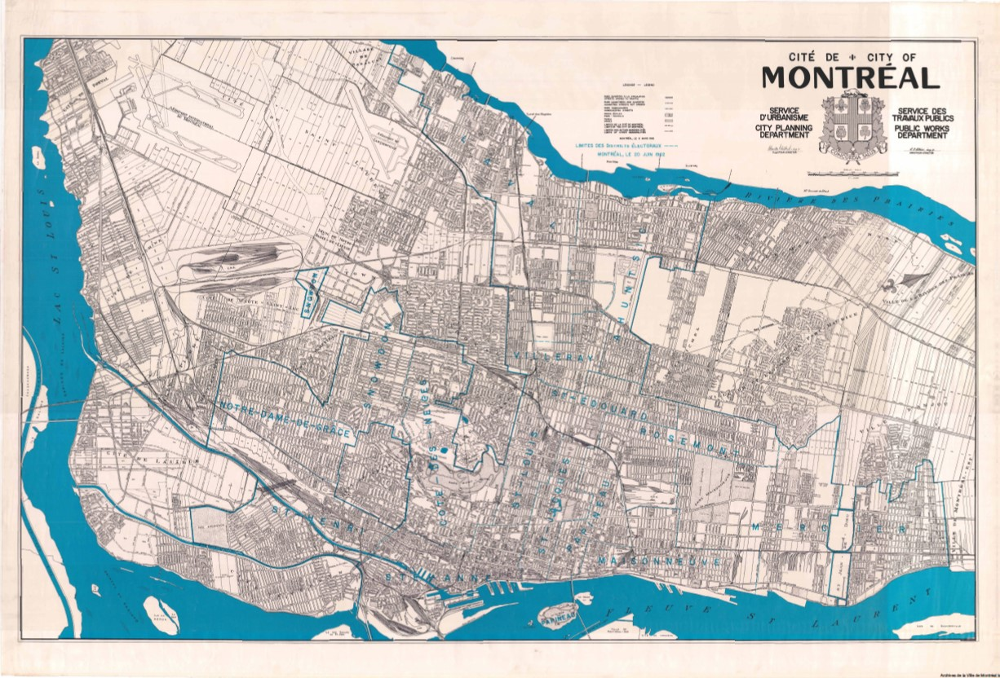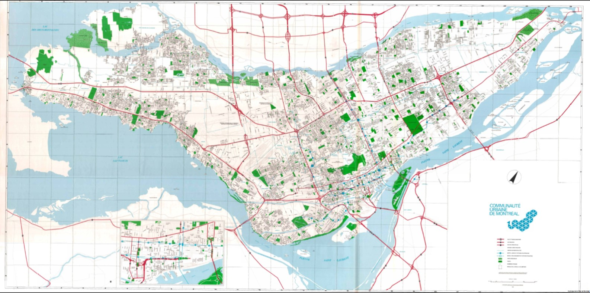
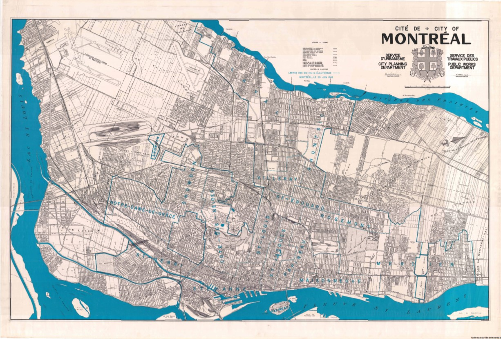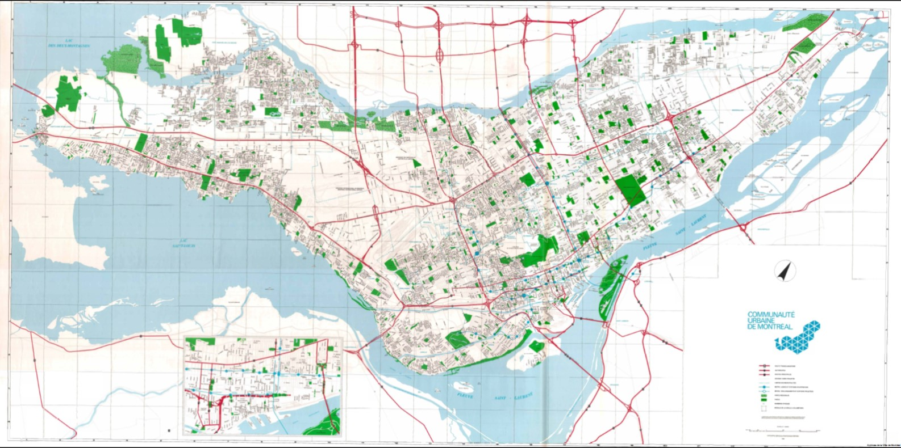
FIGURE 1.5: Représentations de Montréal en 1556, 1645, 1758, 1843, 1897, 1920, 1960, et 1982 (dans l’ordre allant de gauche à droite et de haut en bas). Sources: Archives Montréal.
À partir du 19e siècle, on commence à utiliser la représentation géographique afin d’explorer les relations entre l’occurrence de certains phénomènes et leur localisation. C’est le début de l’analyse spatiale. Un exemple bien connu est celui de l’analyse réalisée en 1854 par le docteur anglais John Snow pour comprendre la propagation d’une épidémie soudaine de choléra dans le quartier Soho de Londres.
John Snow doutait de la théorie en vigueur à l’époque voulant que les maladies telles le cholera ou la peste soient transmises par l’inhalation d’émanations malsaines (appelées des miasmes – des mauvais airs). Il supportait plutôt l’hypothèse que le choléra se développe par l’ingestion d’eau impropre.
Il cartographia les lieux de résidence des personnes infectées et observa qu’ils se trouvaient à proximité de la pompe à eau de Broad Street (Figure 1.6. Cette dernière puisait son eau d’une section polluée de la Tamise. Il sut convaincre les autorités de fermer la pompe, ce qui stoppa l’épidémie. John Snow est perçu aujourd’hui comme un des pionniers de l’épidémiologie moderne.
FIGURE 1.6: Reconstitution de la carte de l’épidémie de cholera créée par John Snow. Chaque barre rouge représente une personne infectée. Les pompes à eau sont illustrées en vert. Source: Wikipedia.
{kind=link}
La géomatique
L’arrivée de l’informatique et des données numériques viennent transformer la cartographie traditionnelle et la façon de traiter l’information géographique. Dans les années 1960, le terme « géomatique », qui est une contraction entre les mots géographie et informatique, est proposé pour désigner cette nouvelle discipline.
On définit la géomatique comme « l’ensemble des connaissances et technologies nécessaires à la production et au traitement des données numériques décrivant le territoire, ses ressources ou tout autre objet ou phénomène ayant une position géographique. »2
En effet, les géographes ou autres utilisateurs de données spatiales doivent maintenant composer avec des données numériques diverses acquises par la photographie aérienne et satellitaire, les outils topographiques électroniques ou munis de GPS, la numérisation de documents papiers, etc.
De nos jours, la cartographie a laissé place aux systèmes d’informations géographiques (SIG). Un SIG est un système informatique servant à acquérir, gérer, analyser, et visualiser des données géographiques numériques dans le but d’étudier un phénomène se produisant sur la Terre. Nous pouvons donc utiliser un SIG pour produire des cartes, mais également pour intégrer des données multi-sources (cartes, photos, images, …), pour réaliser des requêtes et visualiser des résultats, ou encore faire des analyses spatiales (Figure 1.7).

FIGURE 1.7: Les différents éléments qui composent un SIG. Source: image récupérée le 6 décembre 2021 à https://bookdown.org/tep/gisbooklet/introduction-to-gis.html.
Un SIG est composé d’un ordinateur, de données numériques, et d’un ou plusieurs logiciels spécialisés. De plus, un SIG doit être développé par du personnel qualifié et pouvoir servir à des utilisatrices ou des utilisateurs.
Les SIG font maintenant partie de notre vie quotidienne. Pensez par exemple à Google Map, un des SIG les plus utilisés. Ce dernier permet de calculer des itinéraires, de localiser des services près d’une adresse, et de visualiser une localisation par l’outil « Street View ». Plusieurs services offerts aux individus sont aussi dotés d’une interface SIG, comme la plateforme de vélos en libre-service BIXI, ou encore les sites immobiliers pour la vente ou la location de logement (Figure 1.8).
FIGURE 1.8: Exemples de SIG dans notre vie quotidienne. Google Map affiche les services autour d’une adresse. L’application BIXI permet de trouver les bornes et les vélos accessibles. Source: image récupérée le 6 décembre 2021 à https://journaldesvoisins.com/nouvelles-stations-bixi-dans-ahuntsic-cartierville/. L’outil d’affichage de DuProprio permet d’identifier les résidences à vendre dans un secteur donné.
Les SIG sont surtout de puissants outils pour visualiser et diffuser de l’information et sont de plus en plus utilisés pour faciliter la prise de décisions dans divers contextes. Nommons quelques exemples parmi les multiples domaines d’application des SIG :
Logistique des transports : connaître l’état du réseau routier, les chantiers de construction, les accidents et le trafic, pour planifier des trajets ou des travaux futurs.
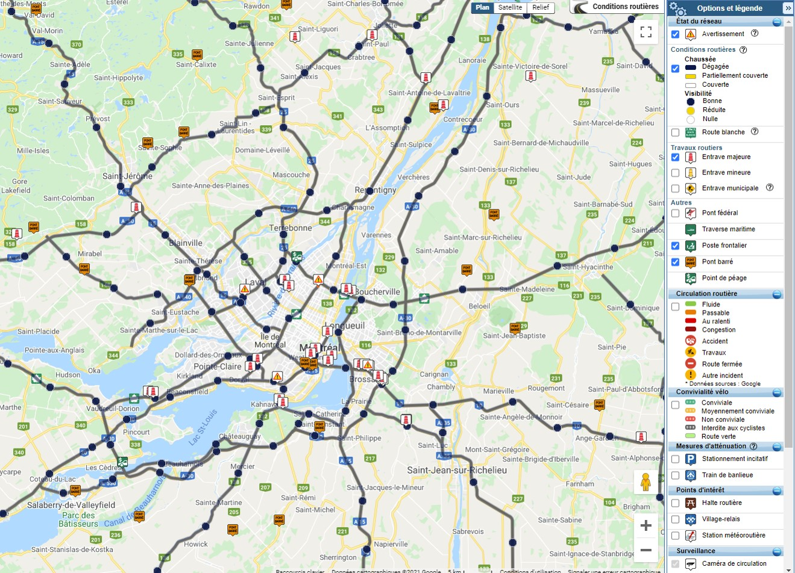FIGURE 1.9: Suivi de l’état du réseau routier par Transport Québec. Source: https://www.quebec511.info/fr/Carte/.
Études sociodémographiques : cartographier des indices de défavorisation qui servent au gouvernement à répartir de façon équitable les ressources financières dédiées à l’éducation.
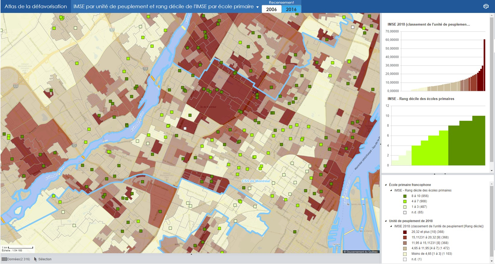FIGURE 1.10: Atlas de défavorisation du Ministère de l’Éducation et de l’Enseignement supérieur du Québec. Source: https://infogeo.education.gouv.qc.ca/public/Atlas_Defavorisation/.
Évaluation des risques : identifier les risques d’inondation d’un secteur pour déterminer la couverture d’assurance requise pour une habitation.
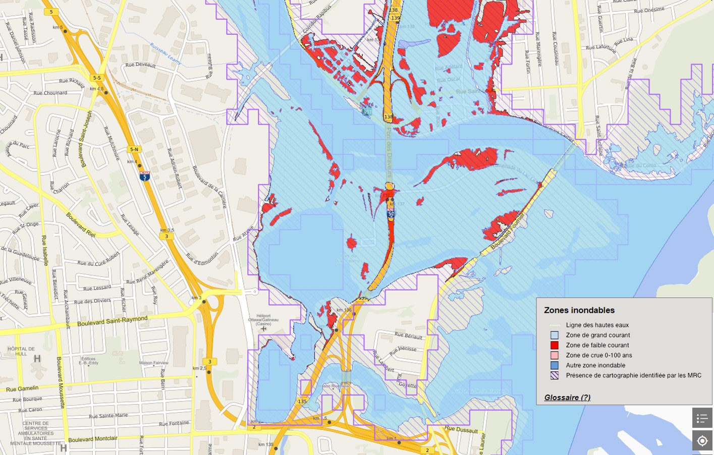FIGURE 1.11: Cartographie interactive des zones inondables développée par le Ministère de l’Environnement et de la Lutte contre les changements climatiques du Québec. Source: https://geoinondations.gouv.qc.ca/.
Gestion des risques : surveiller les risques journaliers d’incendies de forêt pour déterminer les mesures préventives à adopter et les ressources nécessaires pour assumer la suppression de feux.
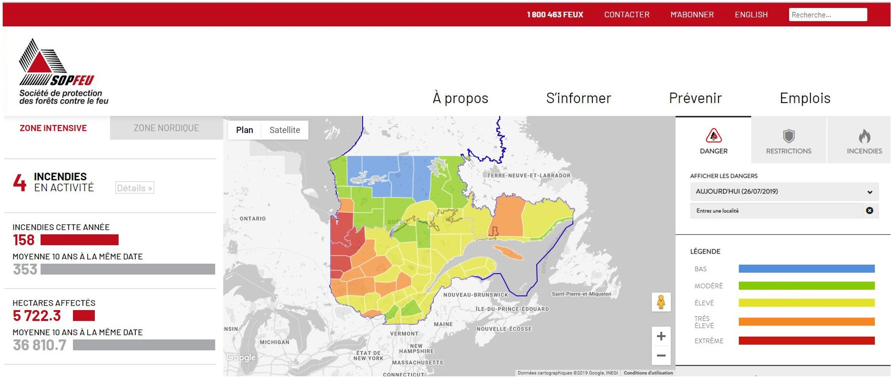FIGURE 1.12: Cartographie des risques d’incendies de forêt mise à jour quotidiennement par la Société de protection des forêts contre le feu (https://sopfeu.qc.ca/cartes/). Source : image récupérée de https://www.rcinet.ca/.
Gestion des ressources naturelles : cartographier la distribution des peuplements forestiers et leurs caractéristiques (composition essences, âge, sol, etc.) pour déterminer les futures récoltes de bois.
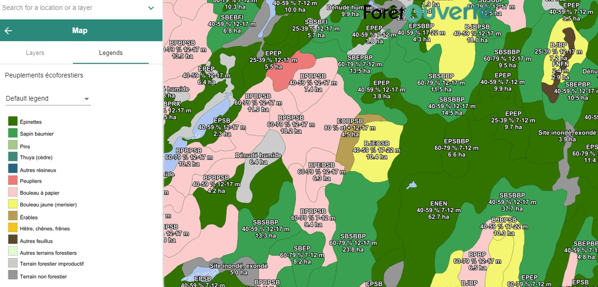FIGURE 1.13: Cartographie des peuplements forestiers et de leurs caractéristiques par le Ministère des Forêts, de la Faune et des Parcs du Québec. Source: https://www.foretouverte.gouv.qc.ca/.
Évaluation foncière : représenter les limites géographiques des cadastres et identifier la valeur des terrains et des bâtiments pour projeter les revenus municipaux provenant des taxes municipales ou pour préparer une vente immobilière.
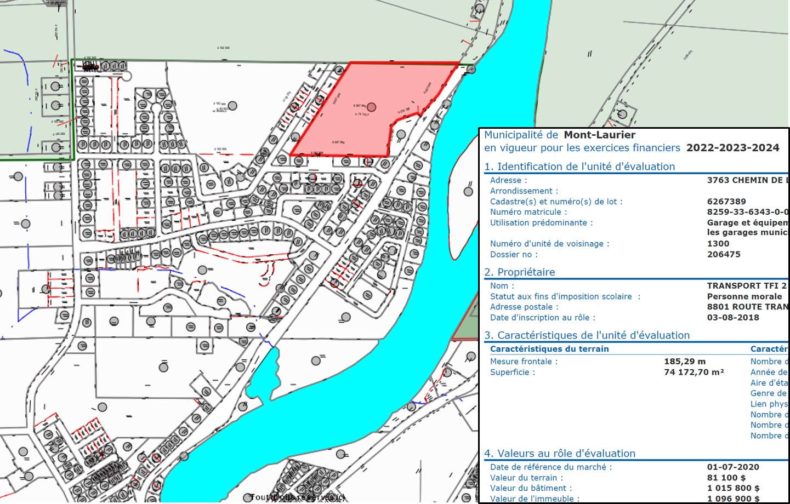FIGURE 1.14: Zonage et évaluation foncière de la municipalité de Mont-Laurier dans la MRC d’Antoine-Labelle (http://geo.mrc-antoine-labelle.qc.ca/sigimweb/).
Géomarketing : mener une étude de marcher qui évaluera comment la clientèle visée par une entreprise ainsi que les entreprises concurrentes sont distribuées dans le secteur géographique convoité.
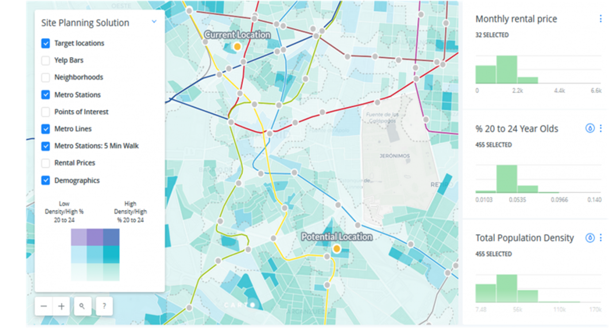FIGURE 1.15: Géomarketing pour les études de marché. Source : https://www.geopoint.pt/en/retalho/.
La science des données
La science des données est un domaine pluridisciplinaire qui regroupe les méthodes scientifiques et l’infrastructure permettant d’extraire les connaissances d’ensembles de données. La science des données utilisent notamment les approches d’intelligence artificielle (tels l’apprentissage automatique et l’apprentissage profond) ainsi que l’infonuagique (p. ex. les serveurs, le stockage de données, et les logiciels disponibles via internet) pour dégager des tendances au sein de données volumineuses ou complexes et ainsi solutionner des problèmes diverses.
Les applications de la science des données se sont multipliées devant la disponibilité de données massives et le besoin de les analyser. Ces applications incluent maintenant des secteurs aussi variés que la santé, le commerce et l’astrophysique.
Depuis les années 2010, nous observons une convergence entre la géomatique et la science des données. En effets, les concepts et les outils développer dans ces domaines traditionnellement distincts sont mis à profit afin de pouvoir gérer, analyser et visualiser un nombre de grandissant de données spatiales.
L’augmentation fulgurante des données spatiales est associée à plusieurs avancées en technologie des capteurs et des communications (Lee and Kang 2015). Ces développements ont permis de diversifier les appareils capables d’acquérir des données géoréférencées et de produire des appareils accessibles à tous et mobiles (penser à vos téléphones cellulaires!). Ces développements ont également permis de connecter en réseau les capteurs de données, et d’accroître la précision des mesures ainsi que leur suivi en temps réel.
Ces avancées technologiques ont donc suscité (et continuent de susciter) l’émergence de nouvelles applications reposant sur l’utilisation de données spatiales. Par exemple, les données de géolocalisation, et même les messages sur les médias sociaux peuvent faciliter le travail des gouvernements lorsqu’ils doivent fournir efficacement une aide appropriée suivant des évènements tels des accidents. Dans le contexte de la pandémie de COVID-19, les données sur la distribution des cas ont servis, entre autres, à prendre des décisions sur les règles de confinement à adopter selon le nombre de cas par régions.
FIGURE 1.16: Carte illustrant la distribution des cas au Canada. Ce portail SIG est fourni par la compagnie ESRI Canada et est disponible sur le site suivant : https://ressouces-fr-covid19canada.hub.arcgis.com/.
Dans ordre d’idées similaires, l’application Alerte COVID du gouvernement canadien, qui a pour objectif de limiter la propagation de la maladie, permet aux abonnés d’être informés si une tierce personne ayant reçu un résultat positif s’est trouvée dans leur proximité dans les 14 derniers jours.
En environnement les applications des données spatiales sont nombreuses. Par exemple, les colliers-GPS portés par des mammifères permettent de mieux comprendre le déplacement des individus appartenant à une espèce menacée et ainsi de mieux protéger leur habitat3.
. Source : Caribou Ungava, Photo : Steeve Côté. Images récupérées le 10 décembre 2021 à https://www.canada.ca/fr/environnement-changement-climatique/services/registre-public-especes-peril/evaluations-rapports-situations-cosepac/caribou-certaines-populations-2017.html.](Module1/images/1_Caribou.jpg)
FIGURE 1.17: Carte illustrant les migrations printanières et automnales de caribous de la sous-population de la Rivière-aux-Feuilles dans le Nord du Québec. Chaque ligne représente le déplacement d’un individu suivi par satellite. Ces données ont été acquises aux cours des années 2009-2011 dans le cadre du projet Caribou Ungava. Source : Caribou Ungava, Photo : Steeve Côté. Images récupérées le 10 décembre 2021 à https://www.canada.ca/fr/environnement-changement-climatique/services/registre-public-especes-peril/evaluations-rapports-situations-cosepac/caribou-certaines-populations-2017.html.
Les observations par des professionnels ou même par des citoyens peuvent aussi servir à cartographier la présence d’animaux et aider à déterminer leurs aires de répartition. Par exemple, le programme ebird développé par le Cornell Lab of Ornithology et la National Aubudon Society consiste en une immense base de données d’observation d’oiseaux à travers le monde auxquelles tous peuvent contribuer en identifiant l’espèce, la localisation et le nombre d’individus repéré. En date de mai 2021, ebird contenait plus d’un milliard d’obervations d’oiseaux soumises par environ 700 mille participants4.

FIGURE 1.18: Carte illustrant la distribution du Roitelet à triple-bandeau produite à partir des données d’observation de ebird. Le mauve indique les lieux où l’espèce est présente à l’année, le rouge, durant la période de reproduction, le bleu, durant les périodes de non-reproduction, le jaune durant les saisons de pré- et post-reproduction, et le gris les lieux d’absence ou d’observations rares. Source : https://ebird.org/science/status-and-trends/range-maps - Illustration © Hilary Burn/Lynx Edicions.
Les services basés sur la géolocalisation aussi sont de plus en plus important dans notre économie. L’industrie du commerce de détails, de la restauration, du tourisme, et du transport profitent tous d’applications géo-dépendantes. Pensez par exemple à Uber, Dashdoor, Trip Advisor et même les applications de rencontre comme Tinder. De tels services permettent, entre autres, de signaler des offres aux consommateurs en fonction de leur position. De plus, les données spatiales peuvent servir à identifier des intérêts locaux pour certains produits et ainsi permettre aux entreprises d’améliorer l’efficacité de leur chaîne d’approvisionnement.
 offrant des services basés sur l’analyse de données spatiales pour améliorer les chaînes d’approvisionnement. Source : https://log-hub.com/my-maps-platform/.](Module1/images/1_AppCommerciale.jpg)
FIGURE 1.19: Carte illustrant la position des consommateurs et le nombre de ventes d’une entreprise commerciale en Espagne. Carte tirée du site web de la compagnie Log-hub offrant des services basés sur l’analyse de données spatiales pour améliorer les chaînes d’approvisionnement. Source : https://log-hub.com/my-maps-platform/.
Les utilisateurs des données spatiales se limitaient historiquement aux organismes gouvernementaux. Or, la multiplication des applications dans différents secteurs a augmenté le besoin pour des logiciels de visualisation et d’analyse de données spatiales et aussi pour une main d’œuvre qualifiée capable d’opérer ces outils.
1.1.2 Les outils et logiciels de visualisation et d’analyse géo-spatiale
Dans le cadre de ce cours, nous utiliserons le logiciel et langage de programmation R pour réaliser des tâches de visualisation et d’analyse de données spatiales. Or, il existe plusieurs autres logiciels et il est important de savoir où R se situe par rapport aux autres options disponibles dans ce paysage géo-spatial5.
Les logiciels commerciaux
Il existe plusieurs logiciels commerciaux de géomatique. Ces logiciels sont relativement dispendieux et généralement seulement les entreprises qui offrent des services spécialisés en géomatique ou les ministères, certaines villes et les universités peuvent se procurer ces licences.
- ArcGIS : est la plateforme principale de la compagnie ESRI (Environmental Systems Research Institute). Créée en 1999 sous le nom ArcMap, cette application est maintenant vendue sous le nom ArcGIS Pro. ESRI offre également d’autres plateformes dont ArcGIS Online, un logiciel de cartographie web, et ArcGIS Developer pour les développeurs.
- MapInfo: est la plateforme de la compagnie Precisely (autrefois Pitney Bowes Software et MapInfo Corporation). Créée en 1995, c’est une des premières plateformes à avoir vu le jour.
- Hexagon Geospatial Power Portfolio: est une plateforme qui comprend divers outils géo-spatiaux dont ERDAS reconnu pour la manipulation d’images de télédétection.
- Manifold: est une plateforme qui se démarque par sa rapidité de par son utilisation de traitements en parallèle et GPU.
Les logiciels libres d’accès
Il existe une offre de plus en plus intéressante de logiciels libres d’accès. La Fondation Open Source Geospatial (OSGeo), une organisation non-gouvernementale fondée en 2006, a pour objectif de soutenir et promouvoir le développement de codes et de logiciels libres en géomatique. Elle chapeaute plusieurs projets comme des bibliothèques spécialisées, des applications SIG mobiles ou bureautiques, et des applications pour la gestion de données spatiales. Voici quelques exemples :
- QGIS: est une application SIG gratuite et de source libre. Elle est écrite en Python mais possède plusieurs interfaces écrite en R, dont RQGIS.
- GRASS GIS: est un des projets fondateurs de l’OSGeo qu’on appelle communément GRASS (Geographic Resources Analysis Support System). Cette application libre permet la gestion, le traitement, l’analyse et la visualisation de données spatiales, ainsi que le traitement d’images et la modélisation. Elle est utilisée par des entreprises commerciales et dans les milieux universitaires et gouvernementaux.
- GDAL: pour Geospatial Data Abstraction Library est une bibliothèque qui permet de lire des données spatiales en formats vectoriel et matriciel6. Plusieurs logiciels, libres et commerciaux, utilisent cette bibliothèque dont QGIS, GRASS GIS, ArcGIS, Google Earth et aussi R.
- PostGIS: est une extension pour les données spatiales de PostgreSQL, un système de source libre pour la gestion de base de données relationnelle et objet.
Les services d’infonuagique
Les services infonuagiques sont des services de stockage et de traitement de données externalisés sur des serveurs distants auxquels les utilisatrices et les utilisateurs peuvent accéder via internet.
- Google Earth Engine: est une plateforme de calcul infonuagique de Google qui permet le traitement de données géo-spatiales. Celle-ci donne accès à un large catalogue d’images satellitaires (p. ex. de Landsat et Sentinel-2) et à la puissance de calcul requise pour les analyser. Google Earth Engine permet ainsi d’explorer les changements sur la surface de la Terre à l’échelle planétaire. Il a été utilisé pour visualiser l’évolution de diverses problématiques environnementales comme la perte de couvert forestier. Google Earth Engine est gratuit pour des utilisations académiques et de recherche et une version payante existe pour les utilisations commerciales. Une interface de programmation existe également pour les développeurs, Earth Engine API.
- ArcGIS Online: est la plateforme web d’ArcGIS, le logiciel commercial présenté plus haut. Cette plateforme donne accès à des milliers de cartes.
- PanGEO: est une plateforme de source libre, et collaborative, pour le développement d’applications pour les analyses géo-spatiales à grande échelle.
- Sepal: est une plateforme gratuite pour l’analyse d’images satellitaires qui repose sur Google Earth Engine et des logiciels de source libre comme Python, R. Sepal est un multiples outils qu’offre OpenForis, un projet conçu par la FAO (Organisation des Nations Unis pour l’alimentation et l’agriculture) pour permettre aux pays de faire le suivi de leurs ressources naturelles.
- Kepler: est également une plateforme de source libre pour les analyse géo-spatiales à grande échelle. Elle est supportée par la compagnie Uber.
- Planet: est une plateforme commerciale pour les analyses géo-spatiales.
Les langages de programmation pour l’analyse géospatiale
La majorité des logiciels d’information géographique reposent sur des interfaces graphiques élaborées où les outils et les fonctions sont accessibles par des menus et des boutons.
Or, le mode « pointer-cliquer» de ces interfaces n’est pas idéal lorsqu’on veut s’assurer que nos analyses soient facilement reproductibles – un aspect crucial de la recherche scientifique est en effet la reproductibilité. C’est pour cette raison que l’utilisation de langages de programmation pour réaliser des analyses et des visualisations de données spatiales est bénéfique et de plus en plus populaire.
L’utilisation de lignes de commandes plutôt que d’interfaces graphiques permet également d’automatiser des tâches que l’on désire répéter plusieurs fois dans une analyse ou encore de réutiliser des blocs de code dans différents projets. De plus, un code se partage facilement et peut être ainsi amélioré par d’autres contributeurs ou contributrices.
Il existe plusieurs bibliothèques géo-spatiales dans les langages de programmation à usage général comme C++ et Java. Cependant, la courbe d’apprentissage est grande pour ces langages et les efforts requis sont disproportionnés pour les usagers qui comptent utiliser leurs fonctionnalités de façon limitée seulement.
En revanche, les langages interprétés7, comme R et Python, sont beaucoup plus simples à apprendre et à utiliser. Ces deux langages possèdent maintenant leur propre ensemble de bibliothèques d’analyse et de visualisation de données spatiales. Ce site documente les bibliothèques utiles en Python.
Dans le cadre de ce cours, nous utiliserons R en combinaison avec RStudio qui est un environnement de développement (en anglais « integrated development environment », IDE). L’interface RStudio facilite et rend convivial l’utilisation de R. Elle permet, entre autre, de créer des fichiers de code d’extension .R ou .Rmd que vous pouvez réutiliser et modifier.
1.1.3 Les bibliothèques géo-spatiales de R
Il existe un nombre important de bibliothèques R (« packages » en anglais) qui se concentrent sur différents aspects de la manipulation, de l’analyse et de la visualisation de données spatiales. D’autres bibliothèques plus générales, comme base R et ggplot2 peuvent aussi être utilisées sur des données spatiales pour accomplir certaines fonctions.
La communauté R est très active, de nouvelles bibliothèques sont régulièrement offertes alors les bibliothèques existantes sont mises à jour et améliorer constamment. Ceci est également vrai pour la « communauté R spatiale ». R étant un projet ouvert, tout le monde peut créer des bibliothèques, ou signalez des problèmes afin d’améliorer des bibliothèques existantes. Vous aussi!
Vous trouverez sur le site de CRAN (The Comprehensive R Archive Network) une page dédiée aux bibliothèques R pour l’analyse géo-spatiale.
Voici quelques bibliothèques importantes que nous utiliserons dans ce cours :
sf: bibliothèque incontournable offrant de nombreuses fonctions pour lire et manipuler des objets spatiaux vectoriels de différentes classes. sf est relativement récente et est venue remplacer les bibliothèquessp,rgeoset les parties vectorielles derdgal.raster: bibliothèque offrant de nombreuses fonctions pour lire et manipuler des objets spatiaux matriciels. Notez que la bibliothèqueterraremplacera peut-êtrerasterdans les années à venir.spacetime: bibliothèque offrant des fonctions pour manipuler des objets spatiaux-temporels.mapview: bibliothèque offrant des fonctions pour visualiser rapidement et de façon interactives des données spatiales.tmap: bibliothèque offrant des fonctions plus flexibles pour visualiser des données spatiales. Elle utilise un style qui s’apparente àggplot2.
1.1.4 La pensée géographique
Nous allons conclure ce module en définissant certains concepts essentiels à l’étude des phénomènes spatiaux.
Échelle spatiale
Le terme échelle spatiale réfère à deux concepts : l’étendue physique d’un phénomène spatial (Figure 1.20) et la résolution (Figure 1.21), c’est-à-dire la taille de l’unité de mesure, ou encore la précision, avec la laquelle on étudie ce phénomène (Dale and Fortin 2014).
FIGURE 1.20: L’étendue physique d’un phénomène spatial.
FIGURE 1.21: La résolution à laquelle on observe un phénomène spatial.
Échelle cartographique
Sur une carte géographique, l’échelle représente le rapport entre une distance mesurée sur la carte et cette distance mesurée sur la Terre (Turner and Garder 2015). On exprime généralement l’échelle par une fraction. Par exemple, 1/10 000, signifie qu’un cm sur la carte représente 10 000 cm sur le terrain (ou 10 m). Alors que 1/1 000 000 signifie qu’un cm sur la carte représente 1 000 000 cm sur le terrain (soit 1 km). Ainsi, plus l’échelle cartographique est petite, plus la résolution est grossière. Inversement, plus l’échelle cartographique est grande, plus la résolution est fine.
Distance
La distance est généralement décrite comme la distance à vol d’oiseau entre deux entités spatiales d’intérêt. Dans ce cas, on la calculera par la distance Euclidienne (équation). Cependant, il faut savoir que le concept de distance peut parfois intégrer des facteurs liés à la capacité de se déplacer d’un point à l’autre (O’Sullivan and Unwin 2010). Par exemple, la distance entre deux villes, accessibles par voie terrestre, réfère généralement à la distance du trajet parcouru en suivant les routes qui séparent les deux villes. Cette distance sera bien différente de la distance Euclidienne. Lorsque vous utilisez Google Maps pour calculer un itinéraire, vous savez que la distance du trajet dépendra également du moyen de locomotion choisi.
De façon similaire, la distance parcourue par un animal dépendra du trajet utilisé pour éviter des obstacles ou des conditions environnementales peu favorables (p. exemple l’absence de couvert forestier).
Finalement, pour le calcul de grandes distances, il peut être nécessaire de considérer la courbure de la surface terrestre. Dans de telles situations la distance Euclidienne doit être remplacée par une équation plus complexe.
Contiguïté
La contiguïté, aussi appelée l’adjacence, indique la proximité de deux ou plusieurs objets spatiaux. C’est, en quelque sorte, une mesure binaire de distance : l’objet A est près, oui ou non, de l’objet B (O’Sullivan and Unwin 2010). La contiguïté est donc un concept relatif à la façon dont on détermine si un objet est proche d’un autre. Par exemple, deux pays qui partagent une même frontière pourront être qualifiés de contiguës. Dans d’autres cas, nous pourrions considérer une distance maximale fixe (p. ex. 50 km) et déterminer que tous les objets (p.ex. des villes) séparés par une distance moindre que la distance fixée sont contiguës. Nous pourrions également déterminer que les cinq (ou un autre nombre fixe) objets les plus proches d’un autre sont contiguës peu importe la distance qui les sépare.
Interaction
L’interaction spatiale entre deux objets repose également sur le concept de distance. Elle exprime la notion intuitive que tous les objets sont en interaction mais ceux qui sont proches ont plus de chance d’interagir que ceux qui sont distants. On réfère à cette notion comme étant la « première loi » de la géographie et on l’attribut au géographe Waldo Tobler. En anglais, cette loi s’énonce ainsi : « Everything is related to everything, but near things are more related than distant things » (Tobler 1970).
L’interaction entre deux objets se mesure généralement par une fonction allant de 0 (aucune interaction) à 1 (interaction maximale). Cette fonction est inversement proportionnelle à la distance séparant les deux objets de sorte que plus la distance est petite plus l’interaction est forte (O’Sullivan and Unwin 2010). D’autres facteurs peuvent influencer la façon dont on mesure l’interaction comme la taille des objets.
L’interaction est étroitement liée aux concepts de dépendance spatiale et d’autocorrélation spatiale (Dale and Fortin 2014). La dépendance spatiale est l’absence d’indépendance entre des objets rapprochés. Puisque l’assomption d’indépendance des données est requise pour réaliser de nombreux tests statistiques paramétriques il est important de pouvoir déterminer la présence de dépendance spatiale. L’autocorrélation spatiale réfère à la corrélation spatiale entre les valeurs d’une même variable. Par exemple, la température à un emplacement sera corrélée avec la température à des emplacements voisins. Il existe différentes mesures pour déterminer la dépendance et l’autocorrélation spatiale. Dans le cadre de ce cours, nous n’aborderons pas ces mesures plus poussées d’analyse spatiale.
Voisinage
Le voisinage est aussi un concept relatif qui peut se décrire de différentes façons. Un voisinage peut être défini en fonction d’un objet spatial particulier. Le voisinage est alors constitué des objets spatiaux qui sont adjacents à l’objet spatial d’intérêt. Par exemple, les cadastres limitrophes d’une propriété donnée, ou encore les bâtiments dans un rayon de 500 m autour d’une borne fontaine. Un voisinage peut aussi prendre un sens qui s’apparente à la notion de quartier. Un voisinage est alors défini comme une région qui entoure des objets spatiaux similaires, et qui se distincte d’autres régions qui circonscrivent également des objets similaires.
Définition donnée par le Département des sciences géomatiques de l’Université Laval - https://www.scg.ulaval.ca/la-geomatique-cest-quoi, consultée le 11 novembre 2021↩︎
Allez jeter un coup d’œil au projet Voyageur Wolf Project, qui suit le déplacement de loups dans le nord du Minnesota grâce à des colliers GPS. On peut y voir des animations démontrant le déplacement d’individus de différentes meutes.↩︎
Source: https://ebird.org/news/global-big-day-2021-reaches-new-heights.↩︎
Le contenu de cette sous-section est adapté du cours Introduction to Geospatial Concepts : The Geospatial Landscape (Wasser et al. (consulté le 1er mars 2020)) de l’organisme Data Carpentry. Data Carpentry développe et offre des formations variées et spécialisées sur le traitement et l’analyse de données. Ses formations s’adressent surtout aux chercheuses et chercheurs scientifiques, mais peuvent être consultées par quiconque car leur matériel est libre d’accès. N’hésitez donc pas à y jeter un coup d’œil.↩︎
Nous verrons les concepts de données vectorielles et matricielles au Module 2 portant sur les Modèles de données spatiales.↩︎
Un langage de programmation interprété est un langage qui fait l’interprétation du code directement au moment de l’exécution sans exiger que l’utilisateur ou l’utilisatrice le compile préalablement. Allez voir cet article de Wikipédia pour en connaître davantage.↩︎